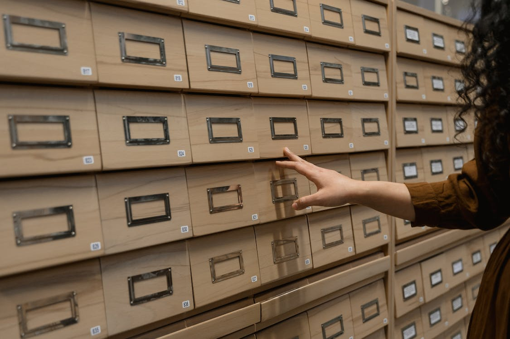
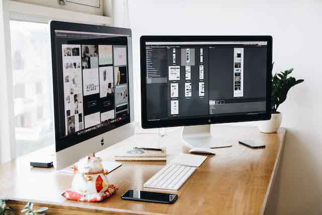

Valdemar Brandt
Jeg er en 21-årig multimediedesigner med særlig erfaring inden for HTML, CSS, JavaScript, C#, XML og SQL. Min brede tekniske baggrund gør mig ikke kun i stand til at skabe simple og effektive designs, men også til at samarbejde effektivt med andre teammedlemmer på hjemmesideprojekter. Jeg tror på, at en minimalistisk tilgang kombineret med mine færdigheder i brugervenlighed og æstetik kan skabe digitale oplevelser, der skiller sig ud. Gennem årene har jeg dedikeret mig til at forfine mine design evner og ser frem til at fortsætte med at udforske grænserne inden for multimediedesign for at skabe innovative og brugercentrerede løsninger.
Kompetencer
Programmering

Med flere års akademisk erfaring inden for HTML, CSS, JavaScript, C# og XML besidder jeg en solid kompetence og dyb forståelse for disse programmeringssprog. Min tekniske viden gør mig i stand til at skabe velstrukturerede og funktionelle digitale løsninger.
Databaser
Jeg har betydelig erfaring inden for databaser, især SQL Server Management Studio (SSMS). Min ekspertise omfatter design og administrationaf SQL-databaser, query-optimering samt håndtering af komplekse datastrukturer. Jeg har en god kendskab til SSMS, hvilket gør mig i stand til effektivt at håndtere og optimere databaser i forskellige projektsammenhænge.
Kommunikation
Gennem mine online præsentationer har jeg skærpet mine kommunikationskompetencer. Jeg navigerer smidigt i realtidsinteraktion, svarer spontant på spørgsmål og bevarer en engagerende dialog. Jeg formidler klart og hurtigt og har erfaring i at opbygge forbindelser med et mangfoldigt publikum, hvilket styrker min evne til at kommunikere effektivt under forskellige forhold.
Grafisk design
Jeg har erfaring inden for grafisk design, hvor jeg kombinerer kreativitet og funktion for at skabe visuelle løsninger. Dette inkluderer omhyggeligt overvejet layout, farvevalg og typografi, som jeg effektivt anvender i forskellige kontekster, fra reklamer til brugergrænseflader.